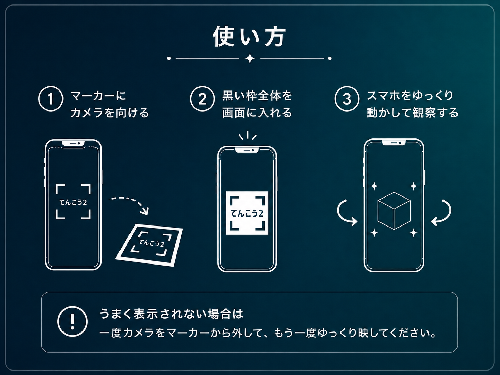

ARを準備しています
カメラの使用を許可してください
1. マーカーにスマートフォンのカメラを向ける
2. 黒い枠全体が画面に入るよう、スマートフォンの位置を調整する
3. 衛星が表示されたら、スマートフォンをゆっくり動かして観察する
黒い枠の上に手や物を置かないでください。
周囲を確認しながらスマートフォンを動かしてください。
この作品を体験するには、
カメラの使用許可が必要です。
ブラウザの設定からカメラを許可し、
ページを再読み込みしてください。

1. マーカーにカメラを向ける
2. 黒い枠全体を画面に入れる
3. スマホをゆっくり動かして観察する
うまく表示されない場合は一度カメラをマーカーから外して、もう一度ゆっくり映してください。